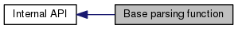

|
protobuf-c-text
Library to generate & parse text format protobufs in C.
|
|
protobuf-c-text
Library to generate & parse text format protobufs in C.
|
|  |
Functions | |
| static ProtobufCMessage * | text_format_parse (const ProtobufCMessageDescriptor *descriptor, Scanner *scanner, TextFormatResult *result, ProtobufCAllocator *allocator) |
| Base function for the API functions. | |
| static ProtobufCMessage* text_format_parse | ( | const ProtobufCMessageDescriptor * | descriptor, |
| Scanner * | scanner, | ||
| TextFormatResult * | result, | ||
| ProtobufCAllocator * | allocator | ||
| ) | [static] |
Base function for the API functions.
The API functions take a string or a FILE. This function takes an appropriately initialised Scanner instead. After that it works the same as the text_format_from* family of functions.
| descriptor | a ProtobufCMessageDescriptor of a message you want to deserialise. | |
| scanner | A Scanner which will be used by the FSM to parse the text format protobuf. | |
| result | A TextFormatResult instance to record any errors. It is not an option to pass NULL for this and it must be checked for errors. | |
| [in] | allocator | Allocator functions. |
NULL on error. A ProtobufCMessage representation of the text format protobuf on success. Definition at line 1188 of file parse.re.
References TextFormatResult::complete, State::error, State::error_str, TextFormatResult::error_txt, Token::id, State::msgs, scan(), scanner_free(), STATE_DONE, state_error(), state_free(), state_init(), STATE_OPEN, states, TOK_MALLOC_ERR, and token_free().
Referenced by text_format_from_file(), and text_format_from_string().

 1.7.6.1
1.7.6.1